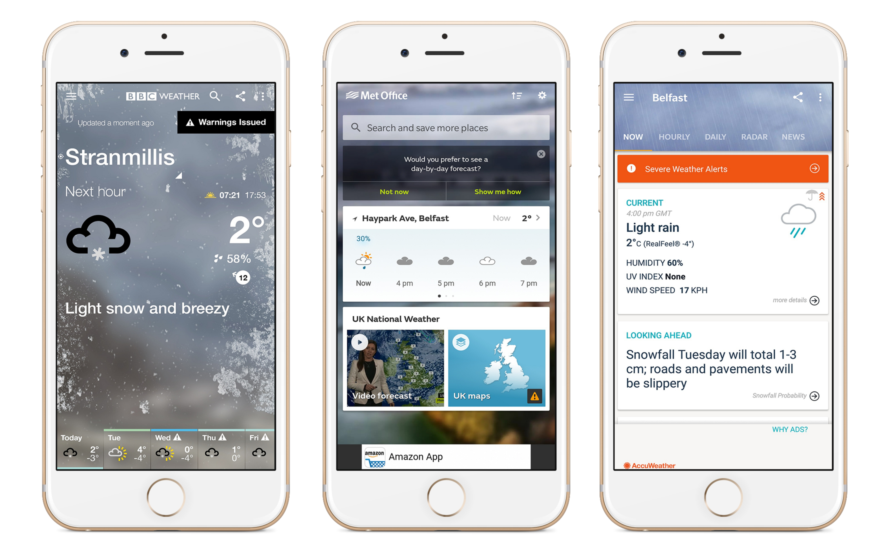
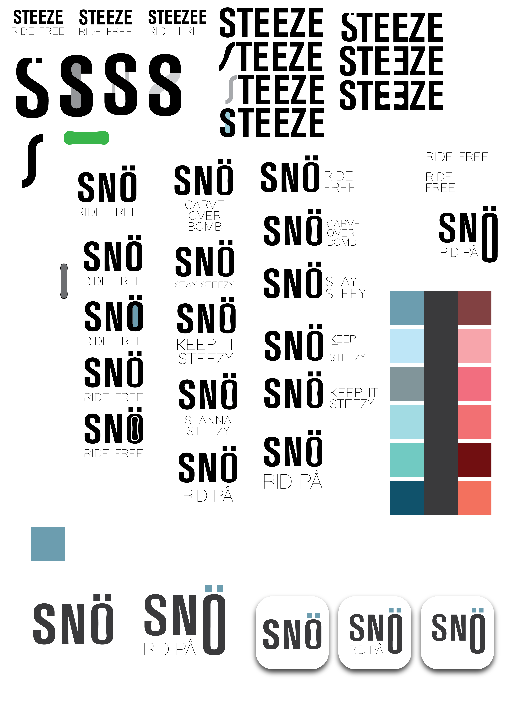
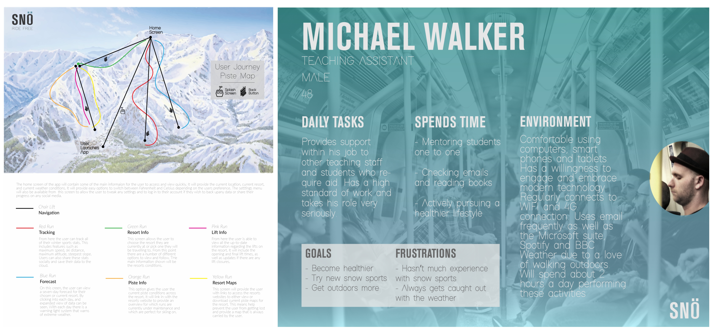
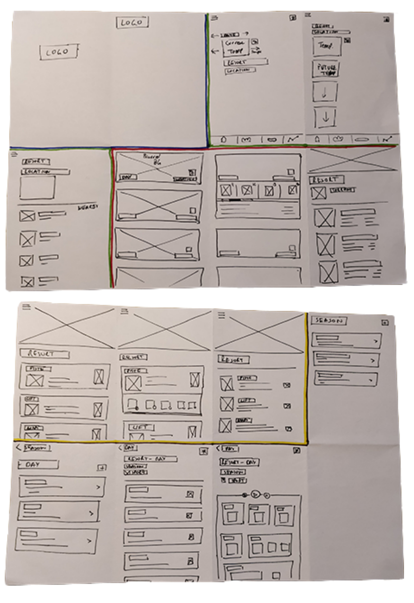

|
This style tile helps to give an overview of how my weather app will look and feel for the user. It includes examples of typography, image style, and colour that will be implemented into the final design. |
| Overview: This project was all about creating a weather app and designing it from a user experience perspective. There was free reign on the overall idea for the app. Snö is a snow-sports app |
Created: Jan - Apr 2018
Skill: UX Design |
Role: Experience Designer, Interface Designer |
|
Additional Assets: Snö Branding Guidelines |
||
|
Further Research: Snö Tumblr Blog |
|
The first thing I did was to research apps in general before
looking deeper at weather apps. I looked at the most popular apps within
various app stores. From these I studied each app in detail and looked
at how they performed certain tasks. As part of this I got some users to
test the apps and recorded their responses.
From this research I then put out a user survey to discover more about the people using weather apps, how they used them, and what they enjoy and find frustrating. |
 |
|  |
I moved onto developing the brand of the app. I started with the
‘Steeze’ brand and decided that I was going to use a wordmark
to represent my brand rather than a visual marque. I tried different
variations to help make this stand out and be distinct. I then thought
about changing the word to 'Steezee’. This fitted better but seemed
too long and bulky as a brand.
I looked at the Swedish word for snow, Snö. This worked well as it suits the brand as well as being a short and snappy name for a brand. I also liked the idea of being able to use the different shapes of the word as visual extensions especially the dots above the 'O’. I then used the snowboard shape within this word too. |
|
As part of designing a great user experience, it is important to
consider the user in all aspects of the process. These personas allow
us to follow a user-specific journey through our product when testing
it and see how they would react or find different scenarios and tasks.
I created a number of user personas to use in the design of my app.
As a part of this section of looking into the user I also created a user-journey map . It helps to show how a user could navigate through my app. As my app has a focus on snow sports, I created the map to reflect the look of a classic piste map. Each run shows a different journey a user can take whilst the lifts help bring the user back to previous points in the app. |
 |
|
|
This style tile helps to give an overview of how my weather app will look and feel for the user. It includes examples of typography, image style, and colour that will be implemented into the final design. |
|
I started by making a list of all the features that I wanted to have
included in the app. From this I then divided them among the four
different sections I was going to have in the app. This allowed me
to see what needed to be included in each view .
Some screens were simpler to create than others but it allowed me to get a feel for the user interface that I am creating. |
 |
|
Using my sketches, I was able to produce a cleaner digital
version of the UI designs. To do this I used Marvel App
to put the screens together. It has also given me the opportunity to
fit out the full resolution of an accurate canvas size as the canvas
size seen here replicates an actual phone screen.
This in turn helped me to produce an accurate list of graphics that now had to be produced to fit out the final prototype. |
Final Outcome